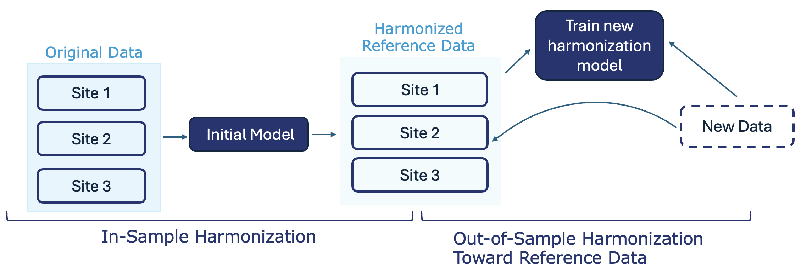

ComBat Methods Guide
This guide provides an overview of the harmonization methods implemented in ComBatFamQC, designed to help users identify which approach best fits their specific study conditions and data characteristics. Multi-site neuroimaging studies often face challenges due to site- or scanner-related variability, known as batch effects, which can obscure true biological signals. The methods described here (ComBat, ComBat-GAM, Longitudinal ComBat, CovBat, and Out-of-Sample Harmonization) offer flexible solutions for correcting these effects across different analytical contexts.
ComBat is suitable for cross-sectional data with linear covariate effects.
ComBat-GAM handles nonlinear relationships such as age effects.
Longitudinal ComBat accommodates repeated measures and within-subject correlations.
CovBat harmonizes covariance structures, ideal for multivariate or network analyses.
Out-of-Sample Harmonization enables consistent adjustment of new datasets using previously fitted models or reference data.
By understanding the assumptions and strengths of each method, researchers can select the most appropriate harmonization strategy to ensure their analyses are both comparable across sites and biologically meaningful.
In Sample Harmonization in ComBat means training a harmonization model using existing data.
ComBat
ComBat is a statistical method used to correct for batch effect in neuroimaging data. In multi-site neuroimaging studies, technical variations can introduce unwanted differences (known as batch effect) that can mask true brain related findings. ComBat applies an empirical Bayes approach to harmonize imaging measurements(like cortical thickness) across batches, while preserving biological and clinical variability. This improves the comparability of neuroimaging results from different sources.
ComBat assumes batch effects exist in the mean and variance of multivariate observations and assumes linear relationships between covariates and features. For site/scanner \(i\), subject \(j\) and feature at location \(v\),
\[ y_{ijv} = \alpha_v + X_{ij}^T \beta_v + \gamma_{iv} + \delta_{iv} e_{ijv} \] where \(\alpha_{v}\) is the intercept, \(X_{ij}\) is the vector of covariates, \(\beta_{v}\) is the vector of regression coefficients, \(\gamma_{iv}\) is the mean site effect, and \(\delta_{iv}\) is the variance site effect. The error \(e_{ijv}\) are assumed to independently follow \(e_{ijv}\sim N(0,{\sigma_{v}}^2)\).
ComBat GAM
ComBat-GAM is an extension of the ComBat method that corrects for batch effects in neuroimaging data using generalized additive models (GAM). In multi-site neuroimaging studies, batch effects arise from both technical differences and complex, nonlinear biological variables such as age. ComBat-GAM addresses this by incorporating flexible, nonlinear modeling of covariates like age and sex, enabling more accurate harmonization of imaging measures (e.g., cortical thickness) across sites. ComBat-GAM assumes that batch effects exist in both the mean and variance of multivariate observations, and that the relationship between covariates and features can be flexibly nonlinear, modeled using Generalized Additive Models (GAMs). For site/scanner \(i\), subject \(j\) and feature at location \(v\),
\[ y_{ijv} = \alpha_v + f(X_{ij}) + \gamma_{iv} + \delta_{iv} e_{ijv} \] where \(\alpha_{v}\) is the intercept, \(X_{ij}\) is the vector of covariates, \(f(\cdot)\) is the smooth (nonlinear) function of covariates, \(\gamma_iv\) is the mean site effect, and \(\delta_{iv}\) is the variance site effect. The error \(e_{ijv}\) are assumed to independently follow \(e_{ijv}\sim N(0,{\sigma_{v}}^2)\).
Longitudinal ComBat
Longitudinal ComBat extends the original ComBat method to harmonize neuroimaging data with repeated measurements from the same subjects over time. By modeling both batch effects and within-subject correlations, Longitudinal ComBat adjusts for site or scanner differences while preserving individual longitudinal trajectories. This approach improves the comparability of multi-site longitudinal studies without removing true biological changes over time. Longitudinal ComBat assumes that batch effects exist in both the mean and variance of multivariate observations aross time, and assumes repeated measures from the same subject are correlated, and it explicitly models these correlations using random effects. For site/scanner \(i\), subject \(j\), feature at location \(v\) and time point \(t\), the model can be expressed as:
\[ y_{ijv}(t) = \alpha_v + X_{ij}^T(t) \beta_v + \eta_{ijv} + \gamma_{iv} + \delta_{iv} e_{ijv}(t) \] where \(\alpha_{v}\) is the intercept, \(X_{ij}(t)\) is the time-varying covariates, \(\beta_{v}\) is the vector of regression coefficients, \(\eta_{ijv}\) is the subject-specific random effect, \(\gamma_{iv}\) is the mean site effect, and \(\delta_{iv}\) is the variance site effect. The time-varying error \(e_{ijv}(t)\) is assumed to independently follow \(e_{ijv}(t) \sim N(0, \sigma_{v}^2)\).
CovBat
CovBat extends the original ComBat method by harmonizing not only the mean and variance, but also the covariance batch effects of neuroimaging data across sites or batches. By adjusting for differences in how features co-vary between sites, CovBat preserves both biological variability and the intricate relationships among features. This method is valuable for multivariate analyses (such as connectivity or network studies) and machine learning applications, as it enhances the comparability of data from multiple sources while maintaining the integrity of underlying biological patterns.
\[y_{ijv} = \alpha_v + X_{ij}^T \beta_v + \gamma_{iv} + \delta_{iv} e_{ijv}\]
where \(\alpha_v\) is the intercept, \(X_{ij}\) is the covariates, \(\beta_v\) is the vector of regression coefficients, and \(\gamma_{iv}\) is the mean site effect. The residuals are modeled as \(e_{ij} = (e_{ij1}, e_{ij2}, \ldots, e_{ijp})^T \sim N(0, \Sigma_i)\), where \(\Sigma_i\) is the site-specific covariance matrix that captures covariance differences across sites.
CovBat addresses covariance differences by using principal component analysis (PCA) on the residuals to align each site’s covariance structure to the pooled covariance across all sites.
Out-of-Sample Harmonization
Out-of-sample harmonization refers to the process of applying a previously trained harmonization model to new, incoming data that was not available during the initial model training phase.
Using Saved ComBat Model
Out-of-sample harmonization using a saved ComBat model means you first adjust your original data and save the ComBat model, then later use that saved model to correct batch effects in any new data, making it comparable to your original dataset.

Example: You harmonize batch effects in Batch A and save the ComBat model. When you later receive Batch B, you apply the saved model so Batch B is adjusted using the same batch-correction parameters as Batch A, ensuring the two batches are directly comparable
Toward Reference Data
Out-of-sample harmonization toward Reference Data involves fitting the ComBat model on the reference dataset and then applying the estimated parameters to new data, so that the new data are standardized to the batch-corrected distribution of the reference.

Example: You choose a high-quality multi-site study as your reference and keep it unchanged. When new data come in, you harmonize them, so they are brought into the same batch-corrected distribution as the reference study.
Learn more
Dive into the Example: Batch Effect Diagnosis to explore how batch effects are identified and analyzed.